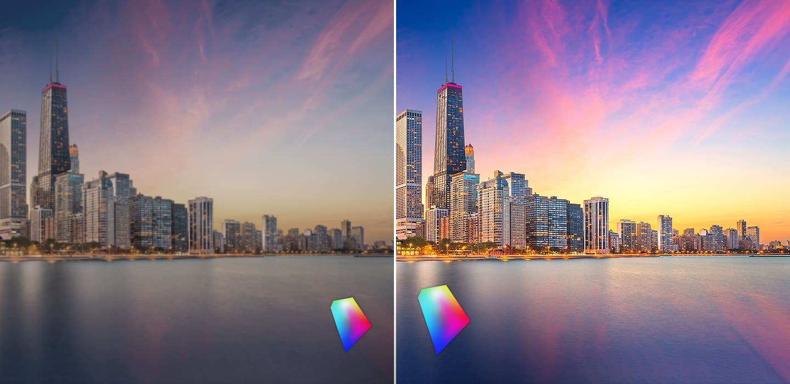
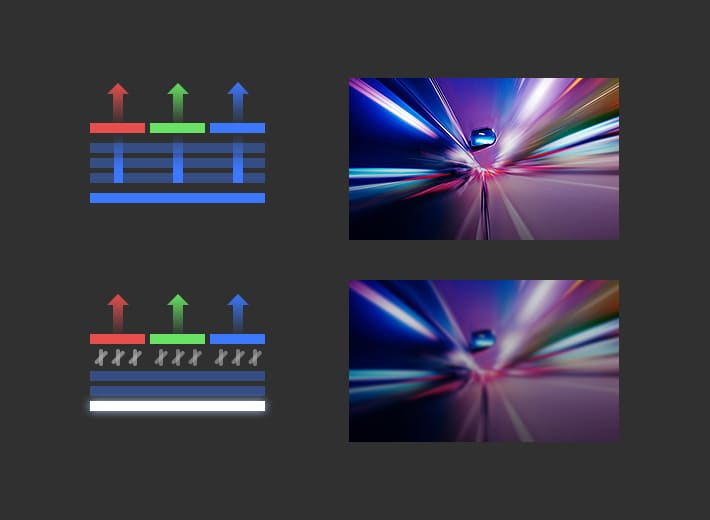

OLED Display
삼성의 OLED 디스플레이는 선명한 화질과 슬림한 디자인, 낮은 소비전력 등 다양한 혁신 기술을 통해
글로벌 중소형 디스플레이 시장을 선도하고 있습니다.
- HOME
- 제품정보
What is OLED?
OLED디스플레이의 구조와 원리
-
OLED(Organic Light Emitting Diodes) 디스플레이는 전류가 흐르면
스스로 빛을 내는 유기물질을 이용한 ‘자발광형 디스플레이’입니다.백라이트 광원을 활용해 액정과 컬러필터를 거쳐 색을 표현하는
LCD와 달리 OLED는 유기발광층에 전류를 가했을 때 이에 반응하는
빛의 3원색인 RGB 발광물질을 통해 색을 표현합니다.픽셀 하나하나가 자체적으로 빛을 내기 때문에 화질,두께, 소비전력
측면에서 매우 우수할 뿐 아니라, 유연하게 구부리고 접을 수 있어 다양한
어플리케이션에 활용할 수 있습니다.
Why 삼성 OLED™?
압도적인 화질
삼성 OLED™는 스스로 빛을 내는 자발광 특성으로 인해 뛰어난 색재현성을 자랑합니다. DCI-P3 120%에 해당하는 넓은 색재현력을 갖춰, 다양한 컬러를 실물처럼 생생하게 표현합니다.
또한 1,500cd/㎡ 이상의 높은 밝기와 낮은 반사율로 햇빛이 강한 야외에서도 또렷하고 선명한 화질을 볼 수 있어 실내외 관계없이 어느 곳에서든 효과적으로 콘텐츠를 감상할 수 있습니다.
*DCI-P3 : 디지털 영상 시대에 맞는 색영역으로 기존 sRGB보다 25% 넓은 색역표현이 가능
-

-
삼성 OLED™는 0.0005nit 미만의 ‘리얼 블랙(Real Black)’을 구현하기 때문에 명암비가 무한대에 가깝습니다. 명암비는 디스플레이의 최대 휘도(화이트)와 최소 휘도(블랙) 차이를 수치로 표현한 것으로, 밝고 어두움의 정도를 세세히 표현할 수 있는 만큼 화질을 좌우하는 중요한 요소입니다.
삼성 OLED™는 1,000,000:1 이상의 명암비로 디테일하면서 보다 깊고 입체감 있는 이미지 표현이 가능해 HDR(High Dynamic Range)을 구현하는데 최적의 디스플레이입니다.
-
게임, 8K 고해상도 영상, VR/AR 등 고사양 콘텐츠가 증가하는 5G 시대에서 보다 매끄럽고 자연스러운 화질을 감상하기 위해서는 디스플레이의 주사율과 응답속도가 중요합니다. 삼성 OLED™는 빠른 응답속도와 선명한 화질로 역동적이고 화려한 고사양 콘텐츠를 즐기는 사용자에게 적합한 디스플레이입니다.
OLED는 빠른 전자 이동도와 액정이 필요 없는 전류구동 특성 덕분에 빠른 응답속도를 구현합니다. 삼성 OLED™는 120Hz 고주사율을 지원하며, LCD보다 약 1.5배 정도 우수한 응답속도를 통해, 지연없이 빠르고 자연스러운 움직임을 볼 수 있습니다.
삼성 스마트폰용 OLED는 글로벌 인증업체인 SGS 평가에서 ‘이미지 끌림 정도’와 ‘동영상 응답속도’ 부문에서 업계 최고 수준을 기록하며 ‘Seamless Display’인증을 획득했습니다.
-

낮은 소비전력, 오래 쓰는 배터리
-
삼성디스플레이는 발광효율을 높인 신규 유기재료를 통해 저전력 OLED 기술을 개발했습니다. 신규 유기 재료는 유기물 층에서 전자의 이동속도가 더 빠르고 쉽게 이동할 수 있도록 개선한 것으로 발광 효율을 큰 폭으로 높임으로써 소비전력을 이전보다 16% 이상 낮추었습니다.
-
삼성디스플레이는 디스플레이 주사율을 자동 조절하는 저전력 OLED 기술인 ‘어댑티브 프리퀀시(Adaptive Frequency™)’ 기술을 상용화 했습니다. ‘어댑티브 프리퀀시’는 소비자의 사용환경에 맞춰 디스플레이 주사율을 10Hz~120Hz까지 자동으로 조절해 전체 소비전력을 최소화하는 패널 기술입니다.
화면 전환이 빠른 게임에서는 120Hz, 정지 이미지는 10Hz를 사용하는 등 가변적인 주사율을 지원함으로써 패널 구동 전력을 기존 대비 최대 22% 낮출 수 있습니다. 상황에 맞게 주사율을 가변적으로 구동함에 따라 동영상 스트리밍과 게임 콘텐츠가 급증하는 5G 시대에 스마트폰 사용시간을 늘려주는 획기적인 디스플레이 기술로 평가받고 있습니다.
-
-
OLED는 항상 백라이트를 켜는 LCD와 달리, 필요한 부분의 픽셀만 발광하므로 어두운 계열의 이미지를 표현할 때는 전력 소모가 크게 줄어듭니다.
최근 글로벌 IT 기업들이 지원하는 ‘다크모드 UI’는 화면에서 정보를 담고 있지 않은 배경을 어둡게 바꾸는 사용자 환경 디자인입니다. 삼성 OLED™에서 다크모드 UI를 적용하면 전체 픽셀 중 작동하는 픽셀의 비율(On Pixel Ratio)이 크게 감소하면서 소비전력을 약 25%가량(노트북 기준) 줄일 수 있습니다.
세련되고, 매끄러운 디자인
OLED는 백라이트가 필요한 LCD와 달리 구조가 단순해 약 30% 더 얇고 가볍습니다. 패널 두께가 얇아지면 스마트폰의 무게와 두께가 줄어들어, 더 슬림한 제품 디자인이 가능할 뿐 아니라 제품 속 배터리 영역도 커지는 등 모바일 기기에 최적화된 환경을 제공합니다.
-
삼성디스플레이는 제품 상단의 전면 카메라를 패널 아래에 장착하는 UPC™(Under Panel Camera) 기술을 개발했습니다. 카메라 모듈이 위치한 패널 부분에 빛의 투과율을 높여, 사진 촬영이 가능하도록 카메라 기능을 확보했습니다. 평소에는 일반 영상이나 이미지가 나오는 스크린으로 활용하다가 필요 시 카메라를 동작해 촬영을 지원합니다.
UPC™ 기술을 적용하면 전면 디스플레이에 카메라 홀이 보이지 않는 풀스크린이 가능해지면서, 화면 몰입도가 높아질 뿐만 아니라 제품 디자인도 훨씬 깔끔해집니다.
-
삼성 OLED™는 휘어지고, 접히는 혁신적인 디스플레이로 새로운 제품 폼팩터와 사용성을 소비자들에게 제공하고 있습니다.
플렉시블 OLED는 유연한 PI 기판과 박막봉지 기술을 적용해 완성된 휘어지는 패널입니다. 가공이 까다로운 유리와 달리 PI는 두께도 훨씬 얇게 만들 수 있기 때문에 전체적인 무게도 함께 감소합니다.
삼성 플렉시블 OLED는 디스플레이의 양쪽 끝을 휘는 ‘엣지 디스플레이‘로 스마트폰 베젤을 최소화하는 풀스크린 시대를 앞당겼습니다.
또한 접었다 펼치는 폴더블 OLED는 대화면 사용자들의 편의성을 높이는 디자인으로 모빌리티 혁신을 가져왔습니다.
폴더블 OLED

폴더블 OLED는 대화면 디스플레이 트렌드와 사용자의 모빌리티 편의성에 대한 니즈가 증가하면서 IT 제품 시장에서 점점 더 주목받고 있습니다.
삼성디스플레이는 누구도 따라올 수 없는 디스플레이 No.1 기술력을 바탕으로 폴더블 스마트폰 패널 시장을 이끌어가고 있습니다. 삼성 폴더블 OLED는 유연하면서도 얇은 초박형 부품 소재를 활용해 일반 OLED 보다 약 50% 두께가 더 얇은 것이 특징입니다. 폴딩 응력이 패널 전체에 고르게 분산되도록해 스트레스를 줄여 내구성을 높이면서도, 접었다 폈을 때 적층 구조를 유지시킬 수 있도록 설계되었습니다.
현재까지 상용화된 폴더블 제품 중에서 곡률이 가장 작은 1.4R이 적용되어 비는 공간이 없어 완벽에 가까운 폴딩이 가능할뿐 아니라, 매끈하고 슬림한 폴더블 스마트폰 디자인을 가능케 했습니다.
삼성 폴더블 OLED는 업계 최초로 폴더블용 커버 윈도우의 재료로 사용하는 초박형 강화유리 UTG™(Ultra Thin Glass)를 상용화했습니다. 삼성 UTG™는 30마이크로 미터 수준으로 얇게 가공된 유리에 유연성과 내구성을 높이는 강화 공정을 거쳐 완성된 것으로 폴더블 스마트폰에 최초로 적용했습니다. 유리 본연의 단단한 특성과 매끄러운 촉감, 표면의 균일성을 그대로 유지하면서도 접을 수 있는 유연함을 가진 것이 특징입니다.
삼성 UTG™는 폴더블 패널 내구성의 척도인 폴딩 테스트 20만회를 안정적으로 통과했을 뿐만 아니라 영하 20도 저온에서도 3만회 폴딩이라는 내구성을 검증받았습니다.
Human Friendly 디스플레이
-
IT 기기의 사용 시간이 늘어날수록 사용자들의 눈의 피로도 역시 증가합니다. 특히 디스플레이를 시청할 때 망막 세포에 영향을 미치는 ‘블루라이트’는 장시간 노출되면 눈 건강에 안 좋은 영향을 미칠 수 있습니다.
삼성 OLED™는 자체발광 원리를 통해 유해 블루라이트 파장 부분의 발광을 줄였습니다. 유해 블루라이트 비율은 줄이고, 안전한 파장을 발광시킴으로써 색감은 유지해 사용자들이 보다 편안하게 시청할 수 있는 환경을 마련했습니다.
-
노트북, 태블릿 사용 시간이 증가하면서, 전자 제품의 사용 환경에 대한 소비자들의 관심도 높아져, 친환경 제품에 대한 소비자들의 니즈가 증가하고 있습니다.
삼성디스플레이의 IT용 OLED는 UL로부터 저 화학물질 배출 관련 ‘그린가드 골드(Greenguard Gold)’를 인증받아 소비자들에게 건강하고 안전한 제품 선택의 기회를 제공하고 있습니다.
‘그린가드 골드’는 전자제품에서 발생하는 휘발성 유기화합물 등을 측정해 방출량이 기준치 이하일 경우 부여하는 친환경 인증으로 제품의 실내공기질 안전성에 대한 영향을 판단하는 기준으로 사용됩니다.
삼성 OLED™는 LCD 대비 유해물질 방출 시간을 절반 이상 저감시켜 (4시간 사용기준) 실내 공기 질을 한층 더 깨끗하게 유지해줍니다.
어플리케이션별 특징
모바일
-
삼성 OLED™는 언제, 어디에서나 선명하고 생생한 화질을 보여줍니다. 주변 환경이 상대적으로 밝은 야외에서는 디스플레이의 밝기, 색표현력, 채도 등이 실내보다 떨어져 보여 정확한 글자나 색을 인지하기 어려워집니다.
삼성 OLED™는 높은 휘도와 낮은 반사율로 밝은 태양 아래의 야외 환경에서도 우수한 화질을 선사합니다. 10000lux가 넘는 밝은 환경에서도 LCD보다 2배가 넘는 DCI-P3 73%의 색영역을 충족하며 최고 휘도가 1500nit 이상을 구현해 글로벌 인증 기관 UL로부터 우수한 ‘야외 시인성(Sunlight Visibility)’을 인증받았습니다.
-
삼성디스플레이는 패널의 소비전력을 획기적으로 낮춘 ‘Eco² OLED™ (에코스퀘어 OLED)’ 기술을 선보였습니다. 이 기술은 패널에 적용된 편광판을 제거해 빛의 투과율을 높이는 대신, 픽셀 구조는 최적화해 외광 반사를 제어하는 기술입니다.
‘Eco² OLED™’는 빛 투과율을 33% 높여 디스플레이 패널의 소비전력을 최대 25%까지 절감했습니다. 또한 플라스틱 소재의 편광판을 제거하면서 유해물질을 저감한 친환경 기술로, 색 순도는 높아지고 넓은 색재현력을 자랑합니다.
IT(노트북/태블릿)
-
생생한 색표현력 뿐만 아니라 빠른 응답 속도로 삼성 OLED™는 게이밍 제품으로도 크게 각광 받고 있습니다. 삼성디스플레이 OLED는 역동적이며 스피디한 액션 게임을 즐길 때 특히 중요한 화질 요소인 이미지 끌림(Blur Length)과 동영상 응답속도(MPRT)에서 각각 1.4mm 이하, 15.4ms이하를 기록해 글로벌 인증업체 SGS의 ‘게이밍 퍼포먼스(Gaming Performance)’ 인증을 획득했습니다.
삼성 OLED™는 움직임이 많은 게임을 플레이할 때도 끌림없이 매끄러운 화면 전환으로 게임 몰입감을 한층 높였을 뿐 아니라, 순간적인 컨트롤이 중요한 게이머의 퍼포먼스를 최대로 발휘할 수 있는 환경을 제공합니다.
생생하면서도 선명한 화질과 더불어 삼성 OLED™의 빠른 응답속도는 역동적이고 화려한 고사양 게임을 즐기는 소비자들에게 최고의 디스플레이 환경을 선사해줍니다.
-
삼성 OLED™는 디지털영화협회기준(DCI-P3) 컬러 볼륨 120%가 넘는 넓은 색 표현력과 0.0005nit 미만의 완벽한 블랙을 표현하는 화질 우수성을 인정받아 ‘시네마틱 익스피리언스(Cinematic Experience)’ 인증을 받았습니다.
UHD 해상도의 고화질 프리미엄 OLED 노트북은 빠른 응답속도, 탁월한 블랙표현, 높은 명암비와 뛰어난 색재현력 등 최고의 디스플레이 성능으로 영화나 영상 등을 감상할 때 압도적인 화질을 선사해줍니다.
고성능 HDR 기술로 밝은 장면은 실제처럼 밝게, 어두운 장면은 보다 깊은 블랙을 표현해 마치 작은 영화관을 체험하는 듯 생생한 화면을 보여줍니다. 또한 ‘블레이드 베젤’ 기술을 적용해 노트북 기기에서 화면이 차지하는 비율을 93%까지 구현해 몰입감을 극대화했습니다.
Automotive
전기차나 자율주행차 등 미래형 자동차 시장에 대한 관심도가 높아지면서 차량용 디스플레이도 주목받고 있습니다. 자동차가 단순한 이동 수단에서 벗어나 사용자에게 가치 있는 시간을 제공해 주는 공간으로 변하고 있는 만큼, 사용자에게 제공하는 정보, 엔터테인먼트의 수준도 그만큼 높아지고 있습니다. 차량에 설치되는 디스플레이의 종류와 수량도 점차 늘어나는 추세입니다.
차량용 디스플레이는 디자인 자유도가 높아야 할 뿐만 아니라, 강한 햇빛에서도 화면이 잘 보이는 높은 시인성을 갖추어야 합니다. 또한 온도와 상관없이 빠른 응답속도와 정확한 정보를 제공해주어야 합니다. LCD는 저온에서 화면의 응답속도가 느려 화면 전환이 늦어지는 반면, OLED는 날씨에 상관없이 빠른 응답속도를 보여줍니다. 또한 뛰어난 야외 시인성과 플렉시블 OLED를 통해 다양한 디자인 적용이 가능한 만큼 차량용 디스플레이에 유리합니다.
QD-Display
스스로 빛을 내는 퀀텀닷은 명암 단계별로 광범위하고 세밀하게 정확한 색 구현이 가능하며,
효율적인 빛의 활용과 간단한 구조로 차세대 대형 디스플레이에 사용되고 있습니다.
- HOME
- 제품정보
What is QD-Display?
퀀텀닷이란?
스스로 빛을 내는 퀀텀닷은 명암 단계별로 광범위하고 세밀하게 정확한 색 구현이 가능하며, 효율적인 빛의 활용과 간단한 구조로 차세대 대형 디스플레이로 주목받고 있습니다.
QD-Display 구조와 원리

-
자발광 디스플레이인 QD디스플레이는 발광원층을 조정하는 전자회로인 TFT층, 빛을 내는 발광원, 발광원의 빛을 활용해 색을 표현해내는 QD 발광층으로 구성되어 있습니다.
QD디스플레이의 발광원으로는 빛 에너지가 가장 강한 BLUE를 활용하기 때문에 보다 밝은 휘도 표현이 가능합니다.
특히 삼성디스플레이의 QD기술은 빛을 효율적으로 활용하는 전면 발광 방식을 활용하여, 백라이트가 필요한 LCD에 비해 심플하고 효율적인 구조로 설계되어 얇고 가벼운 디스플레이를 제공합니다.
Why QD-Display?
넓은 색재현력
QD디스플레이는 발광원에서 생성되는 Blue 빛의 색순도가 매우 높아, 이 빛을 받아 컬러를 표현하는 Red, Green QD 역시 높은 색순도의 컬러 빛을 만들어줍니다. 색순도 높은 RGB는 넓은 범위의 색표현이 가능합니다. 따라서 QD디스플레이는 현존 디스플레이 중 가장 색표현 범위가 넓어, 우리가 실제 눈으로 보는 것과 가까운 색을 표현해줍니다.
뛰어난 시야각
일반적으로 빛은 직진성을 갖고 있어, 디스플레이를 볼 때 화면을 바라보는 각도에 따라 밝기나 색에 영향을 줍니다. QD는 빛을 전방위로 균일하게 발광시키는 특성이 있어 디스플레이를 시청할 때 어느 각도에서 보더라도 균일한 휘도와 색감을 전달함으로써 최적의 화질을 제공합니다.
-
높은 명암비
명암비(Contrast Ratio)는 디스플레이에서 가장 밝고 어두운 화면의 차이를 숫자로 표현해주는 것입니다. 일반적으로 디스플레이는 광원의 제약이나 소비전력 등의 문제로 화면 밝기를 높이는 데 한계가 있습니다. 따라서 블랙 색을 얼마나 어둡게 표현하는지가 명암비에 큰 영향을 미칩니다.
백라이트유닛을 광원으로 사용하는 LCD는 백라이트가 항상 켜져 있기 때문에 픽셀마다 밝기 조절이 불가능하여, 완전한 블랙색을 표현하는 것에 한계가 있습니다.
QD디스플레이는 각 픽셀별로 광원을 조절할 수 있어, 어두운 색을 표현하는 Black 컬러에서는 픽셀의 광원을 Off 시킴으로써 보다 완벽한 블랙을 표현합니다.
한층 더 어두운 블랙 컬러의 표현 덕분에 QD디스플레이는 1,000,000:1의 높은 명암비를 가능케하여 보다 깊고 디테일한 화질을 구현할 수 있습니다.
-
Best for Eye Health
가시광선에서 파란색 빛을 내는 블루라이트 영역 중 41~455nm 구간은 파장이 짧고 강한 에너지를 지니고 있어 눈의 피로도를 높이고 멜라토닌 분비를 억제하는 등 수면에 영향을 주는 것으로 알려져 있습니다.
QD디스플레이는 인체에 영향을 미치는 ‘유해 블루라이트’ 비중을 최적화하여 보다 편안하게 화면을 감상할 수 있습니다.
어플리케이션별 특징
TV
-
HDR은 High Dynamic Range의 약자로 디지털 영상에서 밝은 곳은 더 밝게, 어두운 곳은 더 어둡게 만들어 사람이 실제 눈으로 보는 것에 가깝게 밝기의 범위(Dynamic Range)를 확장시키는 기술을 말합니다.
그래서 HDR을 잘 표현하기 위해서 어두운 곳부터 밝은 곳까지 얼마나 밝기를 폭넓게 보여주느냐가 중요합니다. QD디스플레이는 완벽한 블랙을 표현함으로써 가장 넓은 범위의 밝기를 표현할 수 있습니다. 뿐만 아니라 밝기 변화에 따라 폭 넓은 색 표현이 가능하여 경쟁 기술 대비 탁월한 HDR 표현이 가능합니다.
-
창문을 통해 들어오는 햇빛, 천장의 전등과 주변 조명 등 다양한 빛들이 디스플레이에 반사되면, 우리 시야를 방해해 화면 속 영상을 깨끗하게 감상하기 어렵습니다.
삼성 QD디스플레이는 빛 반사를 최소화하기 위한 최적의 구조로 설계되어 현존 디스플레이 중 빛 반사가 가장 낮은 수준입니다.
덕분에 장소와 환경에 구애 받지 않고, 밝은 시청 환경에서도 빛 반사가 없는 최고의 화질을 제공해줍니다.
Monitor
- 
-
삼성 QD디스플레이는 보다 빠른 응답속도로 끊김 없는 화면을 구현하여 게임이나 영상을 즐길 때 최적의 환경을 제공합니다.
화면 응답속도가 늦어지면 빠르게 움직이는 영상에서 잔상이 발생해 눈의 피로도가 높아집니다.
LCD는 액정에 신호를 주고 액정이 물리적으로 움직이게 하는데 시간이 소요되어 응답속도가 늦어지는 반면 QD디스플레이는 회로의 신호가 곧바로 빛을 만들기 때문에 빛 조절 시간이 매우 짧아 응답속도가 빠릅니다.
덕분에 잔상없이 깨끗한 화면을 구현해 보다 편안한 환경에서 또렷한 움직임을 감상할 수 있습니다.